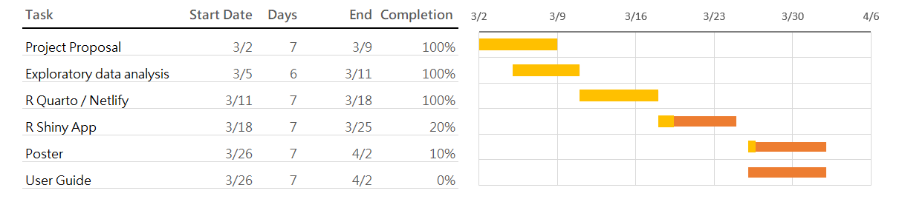

COFINFAD: Colombian Fintech Financial Analysis
1. Project Motivation & Objective
The Colombian fintech sector has seen record growth (reaching nearly 400 companies by 2024), yet understanding the “why” behind user retention and satisfaction remains a challenge.
The Goal: Move beyond simple reporting to understand how socio-demographics (age, income level, education) drive actual financial behavior.
The Problem: Fintech users are not a monolith; “Mainstream” users have vastly different needs than “High-Value” investors. Our tool will allow stakeholders to segment these users dynamically.
2. Data Overview: The COFINFAD Dataset
The dataset captures this transition from traditional cash-based behavior to a digital-first economy.
Transactional Data: Captures the “pulse” of activity across 3.1M+ records, categorized into
Transfer,Withdrawal, andPayment.Customer Profiles: Includes 54 variables that allow us to see how demographics (like the income_bracket or location) correlate with app_logins_frequency and satisfaction_score.
| Category | Key Variables | Data Type | Purpose |
| Demographics | Age, Income, Education, Household Size | Categorical/Numeric | Basis for segmentation and bias checks. |
| Engagement | Digital Engagement Score, App Open Frequency | Numeric (0-1) | Identifying “Sticky” vs. “Chilled” users. |
| Financials | Total Transaction Vol, Avg Trans Value, Frequency | Continuous | Measuring the “wallet share” of the user. |
| Sentiment | Customer Satisfaction (CSAT) Score | Ordinal (1-5) | Target variable for predictive modeling. |
3. The Methodology (The “Three Pillars”)
This is where you align your team’s specific roles with the technical approach:
A. Exploratory & Confirmatory Analysis (EDA/CDA)
Focus: Use Non-parametric tests (like Kruskal-Wallis) to see if transaction volume significantly differs across income brackets.
Visuals: Boxplots for distribution and Correlation Matrices to see if “Age” actually correlates with “Transaction Frequency.”
B. Customer Segmentation (Clustering)
Approach: Perform K-Means or Hierarchical Clustering using R’s
clusterandfactoextrapackages.Objective: Identify the “Profiles.” Are high-income users actually the most active, or is it the mid-income “digital natives”?
C. Predictive Modelling
Target: Predict Customer Satisfaction (High vs. Low) or Churn Risk.
Algorithm: Use Random Forest or Logistic Regression. We will visualize “Variable Importance” to show which factors (e.g., App speed vs. Transaction fees) drive satisfaction most.
4. Prototype
The team has decided to split the main prototype modules as follows:
Exploratory Data Analysis
Clustering Analysis
Predictive Analysis
5. Project Timeline and Work Allocation
